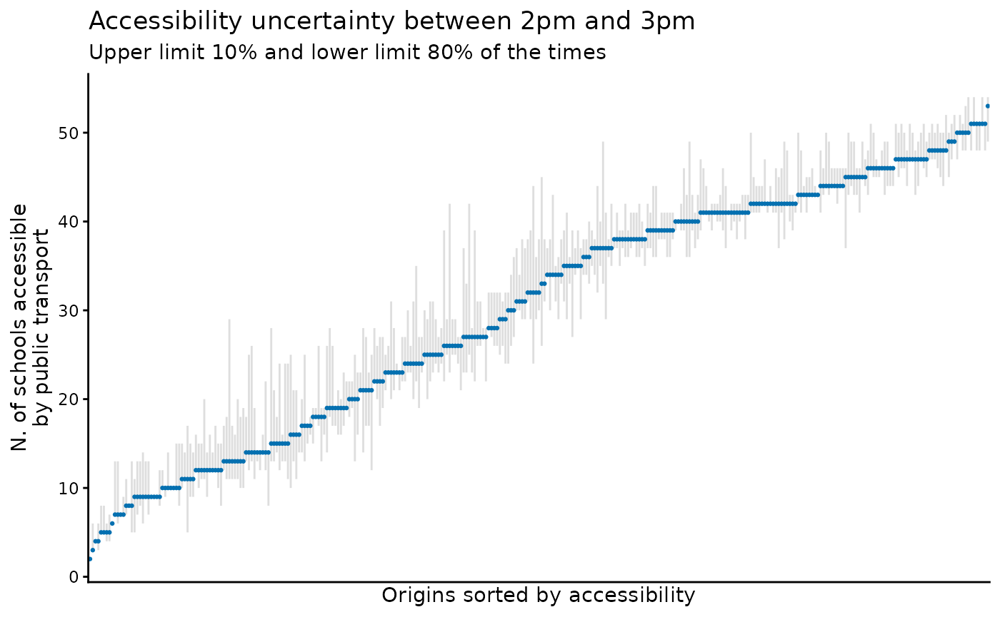

Abstract
This vignette shows how to use and interpret thetime_window parameter in r5r.
1. Introduction
The problem
Travel time and accessibility estimates require a departure time, and
they can differ significantly across departure times because public
transport service levels vary across the day (Stepniak et al. 2019). Even leaving at
10:00am instead of 10:04am can change results
considerably, depending on when vehicles arrive and how well transfers
are coordinated. This relates to the modifiable temporal unit problem
(MTUP) (Pereira 2019; Levinson and et al. 2020).
The uncertainty is greater when GTFS feeds have a
frequencies.txt table, because exact vehicle departure
times are unknown (Conway et al. 2018; Stewart
and Byrd 2022).
The solution
A common strategy is to compute estimates for multiple departure times over a time window and take the average or median. Repeating the routing for each departure is slow, though.
In r5r, functions such as
travel_time_matrix() and accessibility() have
a time_window parameter that does this in a single call.
This vignette shows how to use it and interpret the results.
2. How the time_window works and how to interpret the
results.
With time_window, R5 computes an estimate for
a departure every minute from departure_datetime until the
end of the window. If the GTFS feeds have a frequencies.txt
table, draws_per_minute sets the number of Monte Carlo
draws per minute (default 5, i.e. 300 draws in a 60-minute window);
without frequencies, departures are deterministic and
draws_per_minute does not affect results. For the effect of
the number of draws on result stability, see Stewart et al (2022).
The result is not a single estimate but a distribution reflecting the
uncertainty within the window. The percentiles parameter
selects which percentiles to return. For example, a 25th-percentile
travel time of 15 minutes from A to B means that 25% of trips departing
within the window are shorter than 15 minutes.
3. Demonstration of time_window.
3.1 Build routable transport network with
build_network()
We use the São Paulo (Brazil) sample data included in
r5r.
# increase Java memory
options(java.parameters = "-Xmx2G")
# load libraries
library(r5r)
library(sf)
library(data.table)
library(ggplot2)
library(dplyr)
# build a routable transport network with r5r
data_path <- system.file("extdata/spo", package = "r5r")
r5r_network <- build_network(data_path)
# routing inputs
mode <- c('walk', 'transit')
max_walk_time <- 30 # minutes
max_trip_duration <- 90 # minutes
# load origin/destination points
points <- fread(file.path(data_path, "spo_hexgrid.csv"))
# departure datetime
departure_datetime = as.POSIXct("13-05-2019 14:00:00",
format = "%d-%m-%Y %H:%M:%S")3.2 Accessibility with time_window.
Number of schools reachable from each location within 45 minutes
(decay_function = "step", cutoffs = 45), for
departures between 2pm and 3pm (time_window = 60):
# estimate accessibility
acc <- r5r::accessibility(
r5r_network,
origins = points,
destinations = points,
opportunities_colnames = 'schools',
mode = mode,
max_walk_time = max_walk_time,
decay_function = "step",
cutoffs = 45,
departure_datetime = departure_datetime,
progress = FALSE,
time_window = 60,
percentiles = c(10, 20, 50, 70, 80)
)
head(acc, n = 10)
#> id opportunity percentile cutoff accessibility
#> <char> <char> <int> <int> <num>
#> 1: 89a8100c603ffff schools 10 45 13
#> 2: 89a8100c603ffff schools 20 45 13
#> 3: 89a8100c603ffff schools 50 45 7
#> 4: 89a8100c603ffff schools 70 45 6
#> 5: 89a8100c603ffff schools 80 45 6
#> 6: 89a8100c617ffff schools 10 45 14
#> 7: 89a8100c617ffff schools 20 45 14
#> 8: 89a8100c617ffff schools 50 45 10
#> 9: 89a8100c617ffff schools 70 45 6
#> 10: 89a8100c617ffff schools 80 45 6The output is in long format, one row per origin and percentile, so the first 5 rows refer to the same origin. The 10th percentile counts the schools reachable in at least 10% of departures, the 50th those reachable in at least half of them; so accessibility never increases as the percentile rises. An accessibility of 0 means no school is reachable within 45 minutes.
The plot shows, for each origin (sorted by median), the range of accessibility between the 10th and 80th percentiles, with the median as a dot:
# summarize
df <- acc[, .(min_acc = min(accessibility),
median = accessibility[which(percentile == 50)],
max_acc = max(accessibility)), by = id]
# plot
ggplot(data=df) +
geom_linerange(color='gray', alpha=.5, aes(x = reorder(id, median) ,
y=median, ymin=min_acc, ymax=max_acc)) +
geom_point(color='#0570b0', size=.5, aes(x = reorder(id, median), y=median)) +
labs(y='N. of schools accessible\nby public transport', x='Origins sorted by accessibility',
title="Accessibility uncertainty between 2pm and 3pm",
subtitle = 'Upper limit 10% and lower limit 80% of the times') +
theme_classic() +
theme(axis.text.x=element_blank(),
axis.ticks.x=element_blank())
3.3 Travel time matrix with time_window.
All-to-all travel times for departures between 2pm and 3pm:
# estimate travel time matrix
ttm <- travel_time_matrix(
r5r_network,
origins = points,
destinations = points,
mode = mode,
max_walk_time = max_walk_time,
max_trip_duration = max_trip_duration,
departure_datetime = departure_datetime,
progress = TRUE,
time_window = 60,
percentiles = c(10, 20, 50, 70, 80)
)
head(ttm, n = 10)
#> from_id to_id travel_time_p10 travel_time_p20
#> <char> <char> <int> <int>
#> 1: 89a8100c603ffff 89a8100c603ffff 0 0
#> 2: 89a8100c603ffff 89a8100c617ffff 13 13
#> 3: 89a8100c603ffff 89a8100c60fffff 6 6
#> 4: 89a8100c603ffff 89a8100c607ffff 11 11
#> 5: 89a8100c603ffff 89a8100c6abffff 20 20
#> 6: 89a8100c603ffff 89a8100c6a3ffff 26 26
#> 7: 89a8100c603ffff 89a8100c677ffff 14 14
#> 8: 89a8100c603ffff 89a8100c63bffff 14 14
#> 9: 89a8100c603ffff 89a8100c633ffff 16 16
#> 10: 89a8100c603ffff 89a8100c6afffff 24 24
#> travel_time_p50 travel_time_p70 travel_time_p80
#> <int> <int> <int>
#> 1: 0 0 0
#> 2: 13 13 13
#> 3: 6 6 6
#> 4: 11 11 11
#> 5: 20 20 20
#> 6: 26 26 26
#> 7: 14 14 14
#> 8: 14 14 14
#> 9: 16 16 16
#> 10: 24 24 24Each travel_time_pXX column gives the travel time within
which XX% of the trips departing between 2pm and 3pm are completed:
travel_time_p10 for the fastest 10%,
travel_time_p50 the median, and so on. An NA
means fewer than XX% of the trips arrive within
max_trip_duration (90 minutes).
3.4 Expanded travel time matrix with time_window.
With time_window,
expanded_travel_time_matrix() returns the fastest route
departing at each minute of the window, instead of percentiles. It can
be very memory intensive for large data sets and time windows.
ettm <- r5r::expanded_travel_time_matrix(
r5r_network,
origins = points[1:30,],
destinations = points[31:61,],
mode = mode,
max_walk_time = max_walk_time,
max_trip_duration = max_trip_duration,
departure_datetime = departure_datetime,
progress = FALSE,
time_window = 20
)
head(ettm, n = 10)
#> from_id to_id departure_time draw_number routes
#> <char> <char> <char> <int> <char>
#> 1: 89a8100c603ffff 89a8100c28bffff 14:00:00 1 4491-10
#> 2: 89a8100c603ffff 89a8100c28bffff 14:00:00 2 4491-10
#> 3: 89a8100c603ffff 89a8100c28bffff 14:00:00 3 4491-10
#> 4: 89a8100c603ffff 89a8100c28bffff 14:00:00 4 4491-10
#> 5: 89a8100c603ffff 89a8100c28bffff 14:00:00 5 4491-10
#> 6: 89a8100c603ffff 89a8100c28bffff 14:01:00 1 4491-10
#> 7: 89a8100c603ffff 89a8100c28bffff 14:01:00 2 4491-10
#> 8: 89a8100c603ffff 89a8100c28bffff 14:01:00 3 4491-10
#> 9: 89a8100c603ffff 89a8100c28bffff 14:01:00 4 4491-10
#> 10: 89a8100c603ffff 89a8100c28bffff 14:01:00 5 4491-10
#> total_time
#> <num>
#> 1: 37.2
#> 2: 41.9
#> 3: 37.2
#> 4: 46.9
#> 5: 51.0
#> 6: 40.5
#> 7: 43.4
#> 8: 48.7
#> 9: 53.5
#> 10: 47.73.5 Detailed itineraries with time_window.
detailed_itineraries() returns itineraries rather than
travel time or accessibility percentiles. With time_window,
it returns the fastest itinerary: the shortest travel time measured from
its own departure, so it may depart and arrive later than others (use
time_window = 1 for the earliest arrival). With
shortest_path = FALSE, it also returns sub-optimal
alternatives.
Its number of draws per minute is fixed at 1: it simulates about one
departure per minute of time_window, at random seconds
(consecutive departures are 30 to 90 seconds apart, and the same
departure times are used in every call with the same origin). So a
10-minute time_window simulates about 10 departures. Each
departure is routed separately, and with the default
suboptimal_minutes = 0 only the itineraries arriving
earliest are kept for each departure, even if a slower one has fewer
transfers.
obs. detailed_itineraries() cannot route public
transport trips on frequency-based GTFS feeds; use
gtfstools::frequencies_to_stop_times() to create a suitable
feed.
Cleaning up after usage
Stop the network and run Java’s garbage collector to free the memory it used:
If you have any suggestions or want to report an error, please visit the package GitHub page.